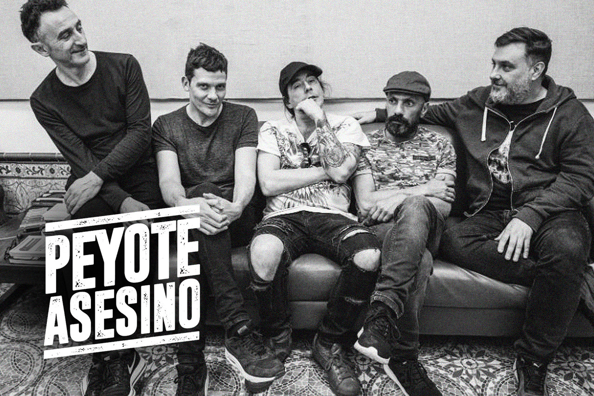

Peyote Asesino es una banda de rock uruguayo que se formó a mediados de 1994 en Montevideo y debutó el 28 de agosto de ese mismo año en el desaparecido pub "El perro azul". Su estilo combina rock, punk, metal, funk y rap, lo que era bastante atípico en la escena del rock uruguayo de la época. La formación original de la banda era L. Mental en la voz. Daniel Benia en bajo, Juan Campodónico en guitarra y Roberto Rodino en batería.
El nombre de la banda remite a una tira cómica de culto mexicana, El Santos contra la Tetona Mendoza, que toma sarcásticamente elementos de la subcultura hippie. Un personaje de esa tira es el Peyote Asesino.
Ya para su segunda presentación el Peyote Asesino ya estaba completo: se sumaron Pepe Canedo en batería y Carlos Casacuberta en voz y guitarra. Durante 1995 el grupo se presentó en el Encuentro de Arte Joven La Movida y en varias salas del circuito underground montevideano. Su sonido nada convencional, sus letras corrosivas e irreverentes, algunos mexicanismos y guitarras distorsionadas formaron parte del cóctel de Peyote. Alguna vez dijeron que hacían "rap blanco", reconociendo la influencia que en sus primeros tiempos tuvieron grupos como los Beastie Boys.
En noviembre de 1994 presentan un demo en el concurso "Generación 95" auspiciado por "Rock de primera" (suplemento del diario "Últimas Noticias"), "Control remoto" (programa de rock de Canal 10 TV) y X FM 100.3, siendo declarados ganadores por el jurado del mismo. El premio: horas de estudio para poder grabar un disco. Esto les abrió la posibilidad de realizar su primer álbum, que sería grabado entre los meses de julio a octubre de 1995 en el Estudio del Cordón.
En diciembre de 1995 lanzan su primer CD por el sello Orfeo, "El Peyote Asesino". La producción fue del integrante de Plátano Macho, Gabriel Casacuberta (hermano de Carlos). El disco era fuerte, compacto, y sonaba muy bien a pesar de las limitaciones técnicas con las que fue producido. Temas como L. Mental y Satisfaction (el tema de los Rolling Stones en una versión de los brasileños De Falla) tuvieron bastante difusión en la radio. En vivo el Peyote convencía todavía más, con recitales duros y prolijos. El lanzamiento del disco homónimo fue durante ese mismo mes de diciembre en la disco Enterprise y convocó a cientos de fans.
El disco tuvo muy buena repercusión y llegó a vender más de mil copias, todo un récord para él rock local en aquel entonces. Mientras tanto, el grupo multiplicaba sus actividades en vivo, tocando con diversas bandas locales.
En enero de 1996 El Peyote Asesino fue votado por los lectores de "Rock de primera", con un significativo margen, "Grupo revelación de rock nacional en 1995". La banda realiza su primer video, eligiendo como primer corte el tema "L. Mental", siendo difundido en distintos canales de TV abierta y cable. En junio, el tema "El peyote asesino" ingresa en la lista de los 10 mejores en X FM llegando al puesto número 1 el 18 de junio, donde se mantiene durante dos semanas.
En agosto se presentan por primera vez en Buenos Aires, Argentina, en el Centro Cultural Rojas, en el ciclo llamado Molotov, junto a la banda argentina Tintoreros.
También en 1996 entran en contacto con Gustavo Santaolalla (quien recibiera el disco de Peyote de manos de Alfonso Carbone, A&R de Orfeo), con quien producirían Terraja, su segundo y ultimo disco a la fecha.
En marzo de 1997 se presentan en el Teatro de Verano de Montevideo, abriendo el show de Illya Kuryaki and the Valderramas tocando ante más de tres mil personas. El video LMental comienza a ser difundido en MTV Latino. Y en la presentación en el festival Rock De Acá (abril de 1997), quedó demostrado que era una de las bandas con más hinchada. En junio participan en "5 horas de rock" junto a Tercera Piedra, Tintoreros (Argentina), La Vela Puerca, Trotsky Vengarán y Los Buitres.
A partir de allí, El Peyote se mete a grabar demos, ensayar preparando su segundo CD. Tras meses de pre-producción en el estudio del Peyote en Villa Española, en septiembre del 97 partieron hacia Los Ángeles.
Las bases se grabaron en el estudio Can Am (donde se grabaron discos de Dr Dre. Snoop Doggie Dog y el Appetite for Destruction de Guns and Roses entre otros) y las voces y guitarras en el estudio de Gustavo Santaolalla y Anibal Kerpel. El disco fue grabado por Tony Peluso y producido por Gustavo Santaolalla junto a Kerpel.
Terminada la grabación el Peyote se embarcó en una gira que los llevó a México junto a bandas como Molotov, Delinquent Habits y Control Machete. El disco Terraja fue editado a finales de agosto de 1998 además de Uruguay, en Argentina, México, Estados Unidos y Puerto Rico. La música de la banda cubre en ese álbum un amplio espectro de géneros e influencias, pasando por el hip-hop, el hardcore, el funk, la música electrónica, el metal y el soul, alcanzando géneros sudamericanos como el tango, el candombe y la milonga.
A su vuelta a Uruguay, presentan Terraja en el legendario recinto rockero La Factoría (Agraciada y Suárez) y tocan casi todos los fines de semana en el pub Laskina. En octubre de 1998 tocan en Argentina con Molotov, Bersuit Vergarabat y Árbol, recibiendo críticas muy positivas. En ese mismo mes, tocan nuevamente en el Teatro de Verano de Montevideo junto con Molotov y Plátano Macho.
En mayo de 1999, tras tocar un par de fechas en Chile, la banda decide entrar en un impasse que resultaría en su disolución. El 22 de marzo de 2009, a 10 años de su separación, la agrupación se presenta en el festival Pilsen Rock. Las presentaciones continuaron el 4 y 5 de noviembre de 2009 en el Teatro de Verano de Montevideo.